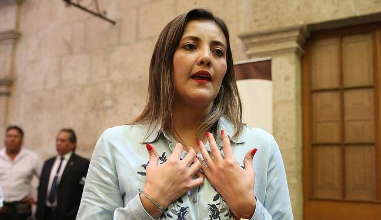
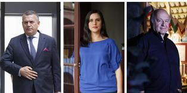
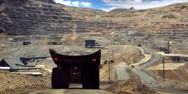

EN VIVO | Alianza Lima vs. Municipal: Sigue el partido por la Fase 2 de la Liga 1

Por presuntos pagos ilícitos de ICCGSA
Equipo especial Lava Jato inicia investigación contra Yamila Osorio
GIOVANNA CASTAÑEDA PALOMINO
Nuevo audio muestra que Hinostroza buscaba que "Soto" pueda tener llegada al ROP
KAREM BARBOZA QUIROZ
Alfredo Barnechea afirma que Acción Popular debe salir "unificado" tras internas
REDACCIÓN EC
Violación grupal en Piura: dos semanas de agresión a joven y aún no hay detenidos
GLADYS PEREYRA COLCHADO
Llamado por Gareca
Gianluca Lapadula: las principales razones de su convocatoria a la selección peruana
CHRISTIAN CRUZ VALDIVIA

Elecciones 2021
Daniel Urresti, Verónika Mendoza y Hernando de Soto definen su plancha para las internas
SEBASTIAN ORTIZ MARTÍNEZ

Minería en el Perú
Cobre: ¿Por qué la producción del metal rojo podría caer en un millón de toneladas?
JUAN SALDARRIAGA